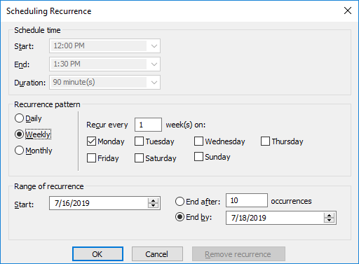

Setting Recurrence
You can set a recurrence schedule for reverse engineering (RE) jobs that you run repeatedly.
To set recurrence while scheduling a new RE job, follow these steps:
- On the erwin DM Scheduler Event Details screen, click Recurrence.
The Scheduling Recurrence dialog box opens.

- Work with the following options:
- Schedule time
By default, the time and duration that you set on the erwin DM Scheduler Event Details dialog box is set as the recurrence start and end time, and duration.
- Recurrence pattern
- Specifies whether the job should run daily, weekly, or monthly. Depending on the pattern that you select, further settings are available as follows:
- Daily: Set the day interval at which the job should run. Or, set it to run every workday. For example:
- Run the job every 2 days.
- Run the job every workday (Monday-Friday).
For the Daily-WorkDays combination to work, ensure that you have strictly set the workdays to Monday through Friday in Calendar Options. For more information on setting work days, refer to the Setting Calendar Options topic.
Weekly: Select the weekly interval and the days of the weeks on which the job should run. For example, run the job every 2 weeks on Monday and Thursday.
- Range of recurrence
- Set the start date of the recurrence. Also, set either the end date or the number of occurrences of the job that you want to run.
- Click OK.
To set recurrence for an existing job that has been scheduled, follow these steps:
- Right-click a job event and click Properties.
The erwin DM Scheduler Event Details dialog box opens.
- Click Recurrence.
The Scheduling Recurrence dialog box opens.
- Follow step 2 given above.
Stopping Recurrence
To stop recurrence for a job, follow these steps:
- Right-click a job event and click Properties.
The erwin DM Scheduler Event Details dialog box opens.
- Click Recurrence.
The Scheduling Recurrence dialog box opens.
- Click Remove recurrence.